Inhalt Index DeskTop Bronstein

 Computeralgebrasysteme Mathematica Vektoren und Matrizen als Listen
Computeralgebrasysteme Mathematica Vektoren und Matrizen als Listen


Eine Reihe spezieller (Listen-) Anweisungen steht für die Definition von Vektoren und Matrizen bereit. Eine einstufige Liste der Art
| 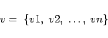 | (20.13) |
läßt sich jederzeit als Vektor im n-dimensionalen Raum mit den Komponenten 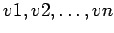 auffassen. Die spezielle Operation 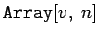 erzeugt die Liste (den Vektor) 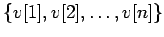. Mit Vektoren dieser Art kann symbolische Vektorrechnung betrieben werden.
Die oben eingeführten zweistufigen Listen l1 und l2 können als Matrizen mit den Zeilen i und den Spalten j aufgefaßt werden. In diesem Falle wäre bij das Element der Matrix in der i-ten Zeile und der j-ten Spalte. Mit l1 ist eine Rechteckmatrix vom Typ (6,5), mit l2 eine quadratische Matrix vom Typ (5,5) gegeben.
Mit der Operation 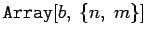 wird eine Matrix vom Typ (n,m) erzeugt, deren Elemente mit 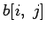 gekennzeichnet werden. Mit i werden die Zeilen numeriert, i läuft von 1 bis 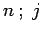 numeriert die Spalten und läuft von 1 bis  . In dieser symbolischen Form läßt l1 sich darstellen:
. In dieser symbolischen Form läßt l1 sich darstellen:
| 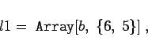 | (20.14a) |
wobei für die Elemente gilt:
| 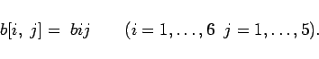 | (20.14b) |
Die Operation 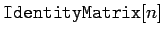 erzeugt die n-stufige Einheitsmatrix.
Mit der Operation 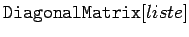 wird eine Diagonalmatrix mit den Elementen von liste auf der Hauptdiagonalen erzeugt.
Die Operation 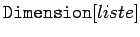 gibt die Dimension einer Matrix, deren Struktur durch liste gegeben ist. Schließlich erhält man mit 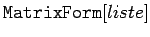 eine matrixartige Darstellung von liste. Eine weitere Möglichkeit zur Definition von Matrizen lautet: Es sei f(i,j) eine Funktion der ganzen Zahlen i und 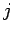. Dann kann mit 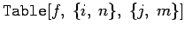 eine Matrix vom Typ (n,m) definiert werden, deren Elemente die jeweiligen f(i,j) sind.